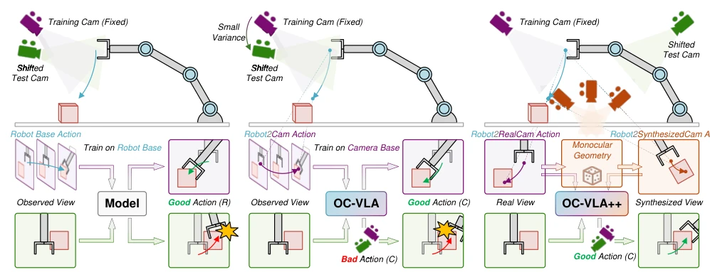
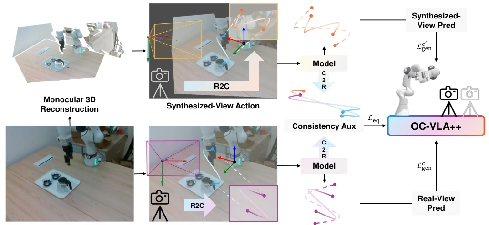
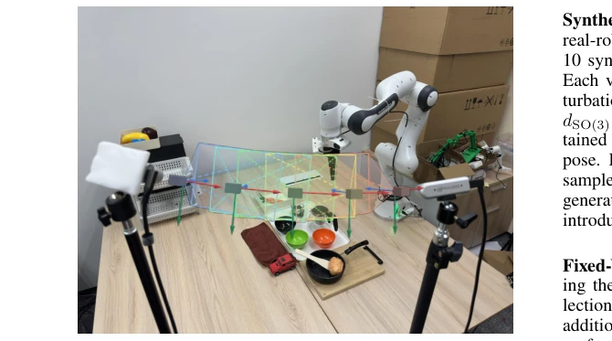
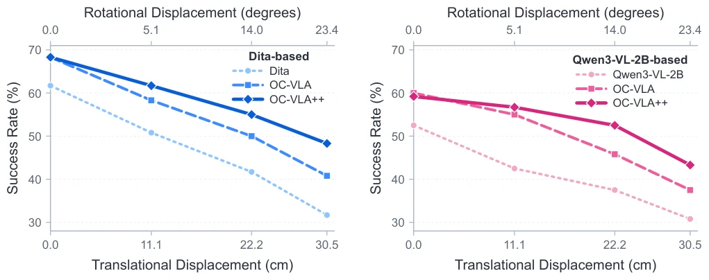
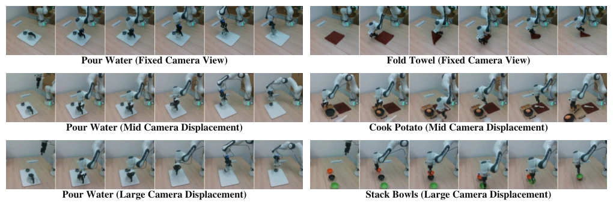
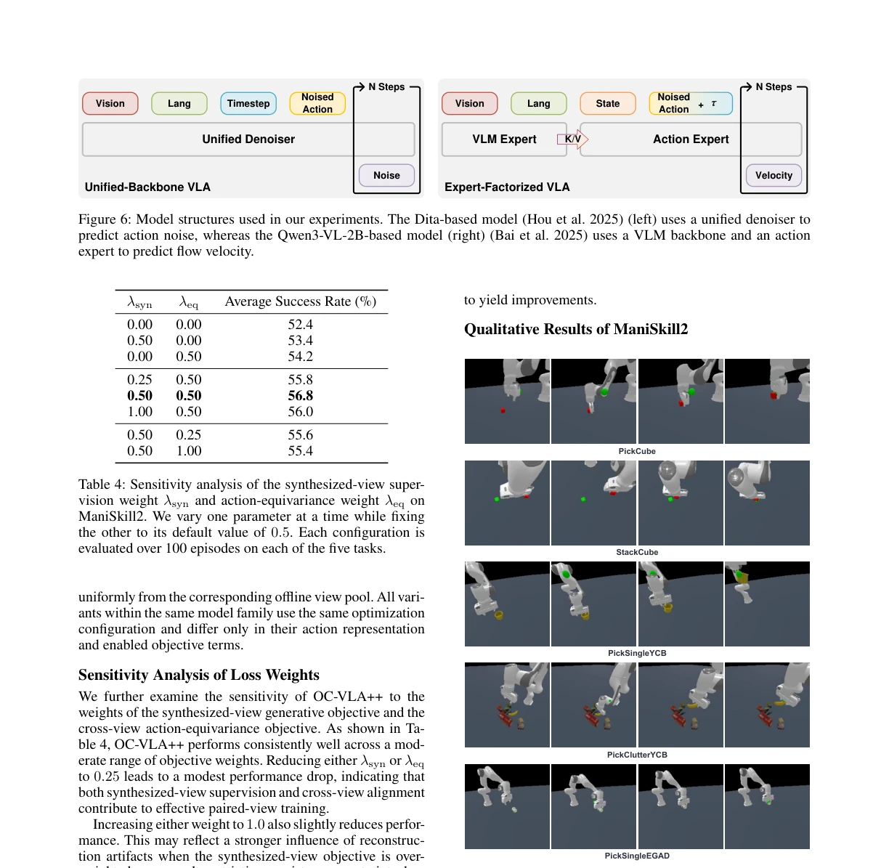
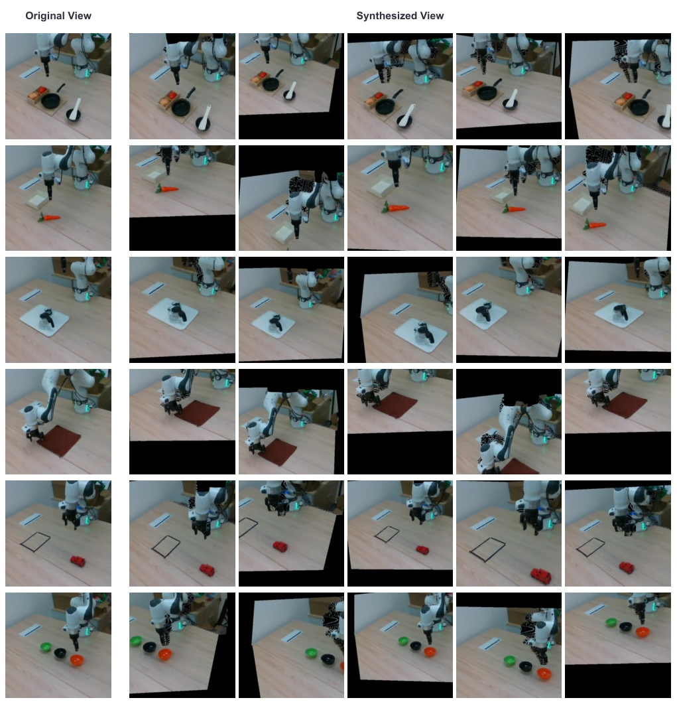

This OC-VLA++ adds a 'geometric cheat' to OC-VLA. Although OC-VLA projects actions into camera space, it is still prone to overfitting when training views are few. OC-VLA++ utilizes offline monocular geometric reconstruction (MoGe-2) to forge nearby views, forcing the model to ensure actions predicted under different views are consistent in the robot coordinate system. The benefit is zero inference overhead, while the drawback is reliance on geometric reconstruction quality. It counts as finding a 'geometric version of 'data augmentation'' for limited view data, understanding physics better than pure image augmentation. However, it essentially relies on offline synthesis; if geometric estimation collapses during real-robot deployment, it might be unsalvageable.
研究动机Motivation
具身智能里，VLA 模型（如 Hou et al. 2025; Black et al. 2024）在固定视角表现好，但相机一移就崩。OC-VLA (Zhang et al. 2026) 提出相机空间动作监督，缓解了坐标不匹配，但没解决视角泛化不足的问题。现有方法要么依赖多视角数据（Cai et al. 2026），要么做视图合成（Wang et al. 2026c），但缺乏显式的跨视角动作一致性约束。本文旨在解决有限视角下策略对相机位移敏感的问题，强调几何一致性而非单纯外观变化。
In embodied AI, VLA models (e.g., Hou et al. 2025; Black et al. 2024) perform well at fixed views, but collapse when the camera moves. OC-VLA (Zhang et al. 2026) proposes camera-space action supervision, alleviating coordinate mismatch, but fails to solve the problem of insufficient view generalization. Existing methods either rely on multi-view data (Cai et al. 2026) or perform view synthesis (Wang et al. 2026c), but lack explicit cross-view action consistency constraints. This paper aims to solve the problem of policy sensitivity to camera displacement under limited views, emphasizing geometric consistency over mere appearance changes.
The overall process separates offline and online. In the offline stage, frozen MoGe-2 (Wang et al. 2026b) is used to reconstruct depth from monocular RGB, generating paired views of nearby views. During online training, real views and synthetic views are input into the same model, separately supervising their respective camera-space action targets. The core innovation is the Cross-View Action Equivariance Loss: converting the actions recovered from the two branches to a shared robot base coordinate frame, calculating the consistency loss for translation, rotation, and gripper commands. In this way, the model not only learns 'to perform actions by looking at images', but also learns 'how actions should change when the view changes'. During inference, only real views are used, with no extra overhead. This method is architecture-agnostic, compatible with Diffusion and Flow Matching.

Figure 1: Overview of OC-VLA++. Compared with OC-VLA (Zhang et al. 2026) and other methods, OC-VLA++ constructs geometry-guided paired views with view-specific camera-space action targets and enforces cross-view action equivariance in a shared robot frame, enabling robust action prediction under substantial camera-pose shifts.

Figure 2: Framework of OC-VLA++. Starting from a single RGB observation, a monocular geometry estimator reconstructs a local 3D representation, which is transformed and reprojected to synthesize a nearby view. The real and synthesized views are assigned view-specific camera-space action targets and processed by the same generative model. The recovered action estimates are transformed into a shared robot frame and regularized by the cross-view action-equivariance loss, while per-view generative losses supervise both predictions.
实验Experiments
在 Franka Panda 真机和 ManiSkill2 仿真上测试。对比基线包括 OC-VLA、Dita (Hou et al. 2025) 及 Qwen 架构。指标为不同相机位移下的成功率。结果显示，OC-VLA++ 在固定视角性能持平，但在相机位移增大时下降更平缓（如最大位移下提升约 7-10%）。消融实验证明几何配对监督和 equivariance 损失均有效。真机实验验证了离线合成视图能泛化到超出合成范围的物理位移。
Tested on Franka Panda real robot and ManiSkill2 simulation. Comparison baselines include OC-VLA, Dita (Hou et al. 2025), and Qwen architecture. The metric is success rate under different camera displacements. Results show that OC-VLA++ performance is comparable at fixed views, but degrades more slowly as camera displacement increases (e.g., improvement of about 7-10% at maximum displacement). Ablation experiments prove that geometric pairing supervision and equivariance loss are both effective. Real robot experiments verify that offline synthetic views can generalize to physical displacements beyond the synthetic range.

Figure 3: Real-robot experimental setup. We use a Franka Emika Panda robot equipped with a Robotiq 2F-85 gripper to execute the actions. Two Intel RealSense D435i RGB- D cameras are used: the left camera remains fixed for data collection and fixed-view evaluation while the right camera is movable to evaluate robustness under camera displacement.

Figure 4: Real-robot success rates under increasing camera displacement. The left and right panels show the Dita-based and Qwen3-VL-2B-based policies, respectively. The lower and upper horizontal axes indicate the translational and rotational offsets of the same camera poses from the data-collection view.

Figure 5: Qualitative real-robot results of OC-VLA++ under increasing camera displacement from top to bottom.

Figure 7: Qualitative results on ManiSkill2 (Gu et al. 2023). Each row corresponds to one task, while the columns show representative successful rollouts under different camera viewpoints. OC-VLA++ consistently produces valid manip- ulation behaviors across diverse object configurations and viewing conditions.

Figure 8: Examples of geometry-guided synthesized views for real-robot training data with MoGe-2 (Wang et al. 2026b). The first column shows the original observation, and the remaining columns show nearby views generated from the same monocular reconstruction under different sampled camera perturbations. Black regions correspond to pixels without valid projected geometry. Despite partial disocclusions and reprojection artifacts, the synthesized observations preserve the task- relevant scene content and provide geometrically related paired-view supervision.